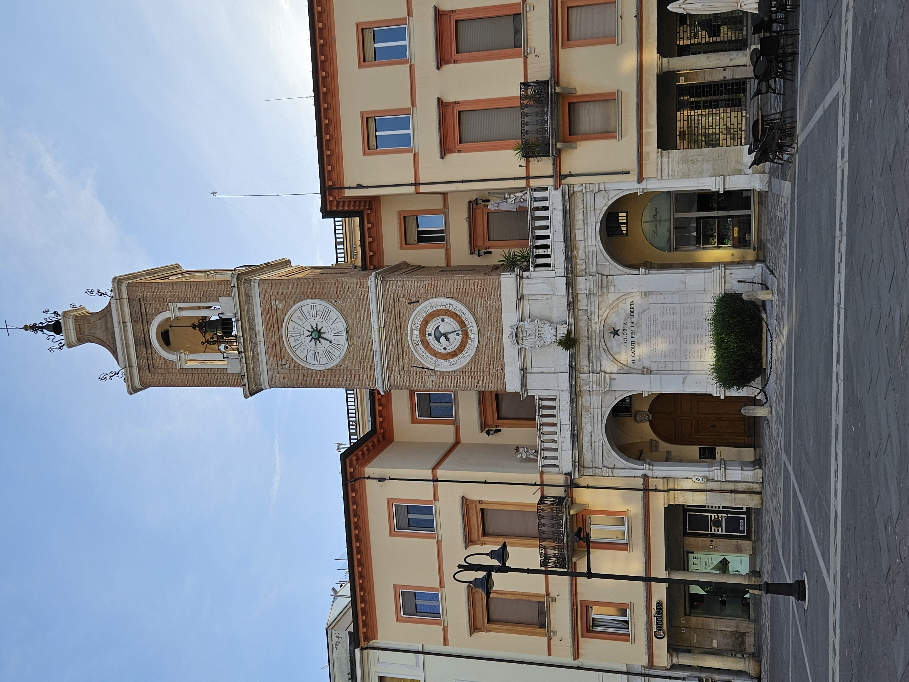

Una mappa interattiva dei luoghi legati alla Resistenza, alla guerra e alla Liberazione di Rimini.
Una selezione di monumenti, piazze e spazi urbani da collegare alla memoria della città.

Zona storica della città, utile per raccontare memoria e territorio.
Approfondisci →Area importante durante la guerra per collegamenti e bombardamenti.
Approfondisci →Spazio dedicato al ricordo dei caduti e delle vittime del periodo bellico.
Approfondisci →Monumento storico della città, colpito dagli eventi della guerra.
Approfondisci →Area storica vicina al centro, utile per collegare passato e città moderna.
Approfondisci →Zona della città collegata al mare, ai collegamenti e alla vita urbana.
Approfondisci →Ogni luogo racconta una parte della memoria collettiva di Rimini: piazze, monumenti e spazi urbani diventano punti da cui rileggere la storia della città.